tuesdata <- tidytuesdayR::tt_load("2022-07-19")
technology <- tuesdata$technology12 Technology Adoption: making gauge charts with {ggforce}
In this chapter we’ll discover how to create gauge charts, a type of chart not native to {ggplot2}, with the help of the {ggforce} extension package.
12.1 Data
The Cross‐country Historical Adoption of Technology (CHAT) dataset (Comin and Hobijn 2009) contains information on the adoption of over 100 technologies in more than 150 countries, spanning over 200 years. Most of the data is annual data, and covers technology categories including, but not limited to, agriculture, communications, transport, and finance - encompassing as broad a definition of technology as possible (Comin and Hobijn 2009).
The CHAT dataset was used as a #TidyTuesday dataset in July 2022, so let’s start by reading in the data using the tidytuesdayR R package (Hughes 2022b) and looking at the definitions of the variables:
The technology data is reasonably large with 491636 rows and 7 columns.
head(technology)# A tibble: 6 × 7
variable label iso3c year group
<chr> <chr> <chr> <dbl> <chr>
1 BCG % children… AFG 1982 Cons…
2 BCG % children… AFG 1983 Cons…
3 BCG % children… AFG 1984 Cons…
4 BCG % children… AFG 1985 Cons…
5 BCG % children… AFG 1986 Cons…
6 BCG % children… AFG 1987 Cons…
# ℹ 2 more variables: category <chr>,
# value <dbl>The data is in long format with the variable (and label) columns containing information on what variable the row relates to e.g. "% children who received a BCG immunization" or "Land naturally regenerating forest area 1000 ha". The iso3c column gives the ISO3 code for the country the row relates to, and similarly the year column relates to the relevant year. The group column details whether the variable is related to "Consumption", "Production", "Non-Tech" (such as GDP), or "Creation". The category column contains information about which category the variable falls into e.g. "Vaccines" or "Agriculture". Finally, the value column provides the value of the variable for the given year and country.
12.2 Exploratory work
Given the large scale of this data (in terms of time frame, spatially, and range of variables), there are many aspects we could look into further. What might be an interesting aspect of this data to visualize?
12.2.1 Data exploration
As in other chapters in this book, we’ll start with some basic exploratory plots in base R. For example, we may look at the distribution of variables in each category using the barplot() function:
# increase left margin
par(mar = c(5.1, 8.1, 4.1, 2.1))
barplot(
table(technology$category),
# make labels smaller so they fit on the page
cex.axis = 0.5,
cex.names = 0.5,
las = 1,
horiz = TRUE
)
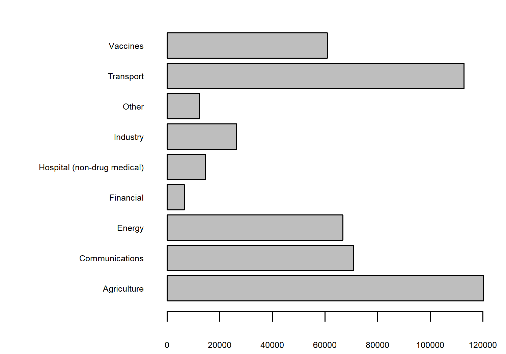
We have lots of observations relating to variables in the agriculture and transport categories. We could also look at how the number of values in these categories has changed over time, using the heatmap() function in base R:
heatmap(
table(technology$category, technology$year),
# prevent re-ordering
Rowv = NA,
Colv = NA,
# make labels smaller so they fit on the page
margins = c(3, 6),
cexRow = 0.5,
cexCol = 0.5
)
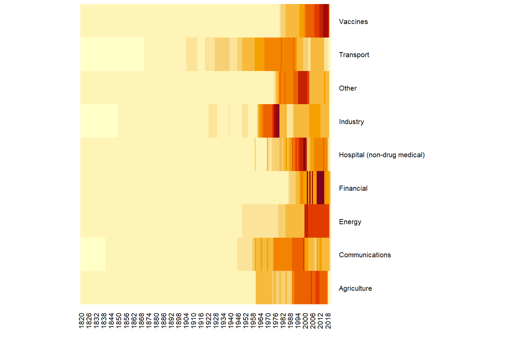
Let’s look into a specific variable in more detail. We need to narrow down the data we want to consider - there are 194 different questions (variables) contained in the data. You can check by running length(unique(technology$label)). One variable we could consider further is the percentage of children who received a measles immunization - indicated by the "pctimmunizmeas" level in the variable column. Let’s create a quick scatter plot of how this percentage has been changing over time:
pctimmunizmeas_df <- subset(
technology, variable == "pctimmunizmeas"
)
plot(
x = pctimmunizmeas_df$year,
y = pctimmunizmeas_df$value,
xlab = "", ylab = "",
cex = 0.6,
main = "Percentage of children who received\na measles immunization"
)
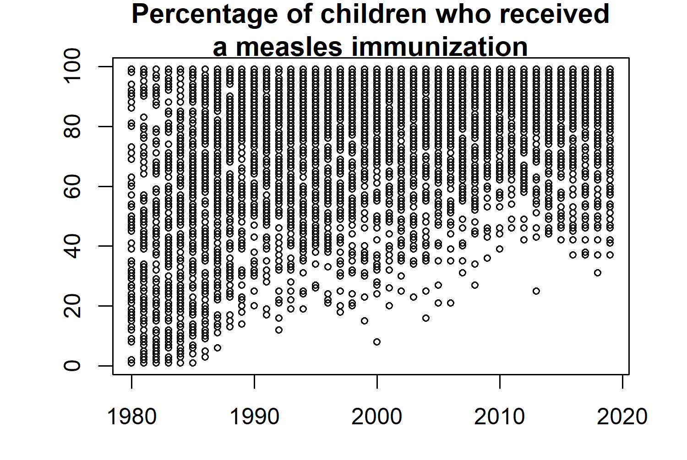
For obvious reasons (the timing of when the first measles vaccine was created and rolled out across the world), the data does not span for 200 years for this variable. Nonetheless, it looks like there is perhaps an increasing trend over time. It’s a little bit difficult to see because we have data from lots of countries on one plot, including some whose values were already high at the start of the time series.
A list of all ISO3 country codes can be obtained by running unique(technology$iso3c), and from there we can choose a subset of countries we want to look at in more detail. Let’s look at Great Britain, USA, Sweden, Brazil, New Zealand, and Venezuela, and store these choices in a vector called countries.
Although including all years of data would better allow us to consider trends in the values, sometimes looking at a only a few snapshots can be more effective. For example, by considering only the years 1980 and 2010 as we’ll do here, readers get a Wow, look how much things have changed! message rather than the perhaps less impactful visual of a gradual trend. We can use the filter function from {dplyr} to filter our technology data set to consider only the rows showing data about the percentage of children who received a measles immunization, in the years 1980 or 2010, and relating to countries in our specified vector of countries.
We no longer need the group, category, variable, or label columns, as these are constant for our data so we can remove these columns using select() from {dplyr}.
# subset of countries to look at further
countries <- c("GBR", "USA", "SWE", "BRA", "NZL", "VEN")
# subset data for specific topic, years, and countries
measles_data <- technology |>
dplyr::filter(
label == "% children who received a measles immunization",
year %in% c(1980, 2010),
iso3c %in% countries
) |>
dplyr::select(-c(group, category, variable, label))
head(measles_data)# A tibble: 6 × 3
iso3c year value
<chr> <dbl> <dbl>
1 BRA 1980 57
2 BRA 2010 99
3 GBR 1980 53
4 GBR 2010 89
5 NZL 1980 80
6 NZL 2010 91Our tidier data now shows just the percentage (value) of children who received a measles immunization in each country (iso3c), in each of 1980 and 2010 (year), How might we visualize this data?
There are a couple of obvious options that come to mind: a simple grouped bar chart, a slope chart, or indeed the (not often popular) pie chart. Our choice of data visualization will depend on which aspects of the data we want to show. Do we want to compare 1980 to 2010? Do we want to compare countries to each other? Do we just want to show the range of values in the data? In this data, the most interesting example is a comparison between 1980 and 2010. Although a slope chart would likely work well for this data, we’re going a little bit more experimental with a gauge chart.
At the time of writing, there isn’t a built-in function in {ggplot2} to create gauge charts. If you’ve never heard of a gauge chart, this initial sketch might give you an idea of what we’re aiming for.
12.2.2 Exploratory sketches
You can think of a gauge chart as being a stacked bar chart with curved over a half circle. Here, rather than one stacked bar chart, we have two stacked bar charts.
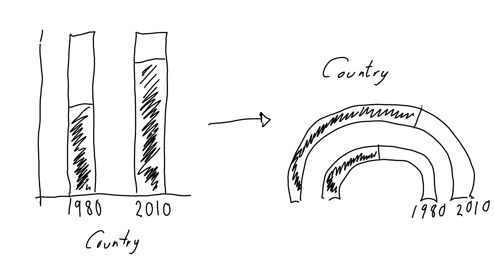
Gauge charts often also include a dial (or needle) to highlight the value further, but that gets a little bit complicated when we have multiple gauges. So let’s leave that for now.
12.3 Preparing a plot
Gauge charts are not a built-in feature of {ggplot2}, so we’re going to have to do a little bit of manual preparation before we start plotting.
12.3.1 Data wrangling
We could use geom_col() and coord_polar() to try to make a gauge chart natively in {ggplot2}. However, the use of polar coordinates in {ggplot2} often makes it difficult to add elements such as annotations in the position you’d like them to be in. So let’s create a gauge chart a slightly different way!
The value in the data currently tells us the percentage of children who did have an immunization, we also need to calculate the percentage of children who did not - by subtracting value from 100. We can then pivot the data such that each country has two rows in the data: (i) one row for the did have immunization value in 1980 and 2010, and (ii) one row for the did not have immunization value in 1980 and 2010. We end up with something halfway in between wide and long format data. Let’s also make the YN column (indicating a did/did not have immunization row) into a factor.
measles_YN <- measles_data |>
dplyr::mutate(no_value = 100 - value) |>
tidyr::pivot_longer(
cols = c(value, no_value),
names_to = "YN",
values_to = "perc"
) |>
tidyr::pivot_wider(
names_from = "year",
values_from = "perc"
) |>
dplyr::mutate(YN = factor(YN))To enable us to work with the percentages more easily, we can convert them into values between 0 and 1 by dividing by 100, and drop the original columns. If you think about creating a stacked bar chart, we need to know the end point of each bar (the maximum y-axis value for each bar). This isn’t the percentage of each group, it’s the cumulative percentage of each group and the ones stacked below it. We use the cumsum() function to calculate the cumulative sum of the percentages across each year and country:
plot_data <- measles_YN |>
dplyr::mutate(
perc_1980 = `1980` / 100,
perc_2010 = `2010` / 100
) |>
dplyr::select(-c(`1980`, `2010`)) |>
dplyr::group_by(iso3c) |>
dplyr::mutate(
ymax_1980 = cumsum(perc_1980),
ymax_2010 = cumsum(perc_2010)
)
head(plot_data)# A tibble: 6 × 6
# Groups: iso3c [3]
iso3c YN perc_1980 perc_2010
<chr> <fct> <dbl> <dbl>
1 BRA value 0.57 0.99
2 BRA no_value 0.43 0.01
3 GBR value 0.53 0.89
4 GBR no_value 0.47 0.11
5 NZL value 0.8 0.91
6 NZL no_value 0.2 0.09
# ℹ 2 more variables: ymax_1980 <dbl>,
# ymax_2010 <dbl>You’ll notice that the ymax_* values are always 1 for the no_value rows - this is because the no_value is the last bar so we will always have plotted 100% of the data by the time we’ve finished that bar. Note that the data is currently still grouped by iso3c - this will be important later!
12.3.2 The {ggforce} extension package
The {ggforce} extension package (Pedersen 2022) contains many useful functions which extend the behavior of {ggplot2}, many of them aimed at exploratory data visualisation. We won’t cover many of it’s functions in this chapter, and instead we’ll focus on how to use it to create gauge charts. {ggforce} is available on CRAN and can be installed with the usual install.packages("ggforce") command.
12.3.3 Gauge charts with {ggforce}
The function that we’re interested in for the purposes of creating a gauge chart is geom_arc_bar() . The geom_arc_bar() function makes it possible to draw arcs in {ggplot2}. You can also use this function to create visualizations such as donut charts or sunburst plots. We’ll use two calls to geom_arc_bar() to create the double gauge chart - one for the 1980 arc, and one for the 2010 arc. There are several required aesthetics when using geom_arc_bar():
-
x0: The x-coordinate of the centre of the circle that the gauge chart lies on. For us, this will be a constant value so we can choose any number -0seems like an obvious choice. -
y0: The y-coordinate of the centre of the circle that the gauge chart lies on. For us, this will be a constant value so we can choose any number -0seems like an obvious choice again. -
r0: The inner radius (fromx0andy0) of the arc. -
r: The outer radius (fromx0andy0) of the arc. The difference betweenr0andrdetermines how thick the gauge chart will be. For each of the two arcs we will draw, these will be constant. For the outer arc (2010), we can setr0 = 0.7andr = 1, and for the inner arc (1980), we can setr0 = 0.2andr = 0.5. Note that the difference between the radii is 0.3 for both arcs so they are equally thick. -
start: The starting angle for each segment in the arc. -
end: The ending angle for each segment in the arc.
The last part of data wrangling we need to do is compute the start and end values.
12.3.4 Computing aesthetics
The end values are easy - these are the ymax_1980 and ymax_2010 columns that we already have. We need to compute the equivalent ymin_1980 and ymin_2010 values: what are the minimum values in each stacked bar chart?
Think again about stacked bar charts instead of gauge charts for a second (since it’s a little bit easier to visualise). The minimum value for the first bar at the bottom of the stack will always be zero - it’s right at the bottom. For the rest of the stacked bars, the minimum value will be equal to the maximum value of the bar stacked below it. This means that we’ve actually already computed all the values we need and stored them in plot_data. We just need to rearrange them a bit…
Tip 12.1: Just because you can doesn’t mean you should
There is almost certainly a nicer way of doing this in base R that contains fewer lines of code and is easier to read. Consider the following code block as an experiment in seeing whether we could do this in a piped workflow, without considering whether we should…
Let’s start with the 1980 data. We start off by creating the 0 values for the minimum in the first stacked bar using rep(0, length(countries)) - since we need one 0 for each country in 1980. We then want to get the ymax_1980 values from plot_data except the last one. We therefore use slice_head() to get this subset of the rows (missing the last one in each country). Remember that plot_data is still grouped by iso3c. We then stick these ymax_1980 to the 0 we created and pass them into a new column called ymin_1980 using mutate(). The code for the 2010 arc is analogous.
ymin_data <- plot_data |>
dplyr::ungroup() |>
# start values for 1980 arc
dplyr::mutate(
ymin_1980 = c(rbind(
rep(0, length(countries)),
(dplyr::slice_head(plot_data, n = -1) |>
dplyr::pull(ymax_1980))
))
) |>
# repeat for 2010
dplyr::mutate(
ymin_2010 = c(rbind(
rep(0, length(countries)),
(dplyr::slice_head(plot_data, n = -1) |>
dplyr::pull(ymax_2010))
))
)All of our variables are currently scaled between 0 and 1 (since they relate to percentages). To plot this as an arc however, we need to convert this to polar coordinates. We want to start our arc at \(-\pi/2\) (instead of 0) and end at \(\pi/2\) (instead of 1). We can use the rescale() function from the {scales} package (Wickham, Pedersen, and Seidel 2023) to define the range we want to scale from and to.
We want to apply this to every column of ymin_data that starts with a lowercase "y" i.e. all of the ymax_* and ymin_* columns so we use mutate() and across() from {dplyr} in conjunction with the starts_with() column selector function. We need to make sure we set ignore.case = FALSE to prevent {dplyr} from trying to rescale the YN column as well.
Tip 12.2: Older versions of
mutate()
In older versions of {dplyr} (including when this plot was originally made), the mutate_at() function would have been used instead of mutate() and across(). The mutate_at() function has now been superseded.
gauge_data <- ymin_data |>
dplyr::mutate(
dplyr::across(
dplyr::starts_with("y", ignore.case = FALSE),
~ scales::rescale(.,
to = pi * c(-0.5, 0.5),
from = 0:1
)
)
)
head(gauge_data)# A tibble: 6 × 8
iso3c YN perc_1980 perc_2010
<chr> <fct> <dbl> <dbl>
1 BRA value 0.57 0.99
2 BRA no_value 0.43 0.01
3 GBR value 0.53 0.89
4 GBR no_value 0.47 0.11
5 NZL value 0.8 0.91
6 NZL no_value 0.2 0.09
# ℹ 4 more variables: ymax_1980 <dbl>,
# ymax_2010 <dbl>, ymin_1980 <dbl>,
# ymin_2010 <dbl>12.3.5 The first plot
We’re now finished with the data wrangling (finally!) and ready to create our first plot. As always, we start with the ggplot() function and pass in gauge_data that will be used for plotting the arcs. The aesthetics for each arc will vary so we’ll hold off on passing them in globally.
We then add two arcs by using geom_arc_bar() twice. We set the x0, y0, r0, and r constants as we described above. Even though we have chosen constant values for the aesthetics, they still need to be inside the aes() function because they are required aesthetics. We then pass the ymin_* and ymax_* columns in as the start and end aesthetics, and set the fill color based on the YN column.
We also use facet_wrap() to draw a pair of arcs for each country in a separate facet, choosing to use nrow = 2 to give us a nice rectangular 3x2 grid of facets for our six countries.
library(ggplot2)
basic_plot <- ggplot(data = gauge_data) +
# Outer 2010 arc
ggforce::geom_arc_bar(
mapping = aes(
x0 = 0, y0 = 0,
r0 = 0.7, r = 1,
start = ymin_2010, end = ymax_2010,
fill = YN
)
) +
# Inner 1980 arc
ggforce::geom_arc_bar(
mapping = aes(
x0 = 0, y0 = 0,
r0 = 0.2, r = 0.5,
start = ymin_1980, end = ymax_1980,
fill = YN
)
) +
facet_wrap(~iso3c, nrow = 2)
basic_plot
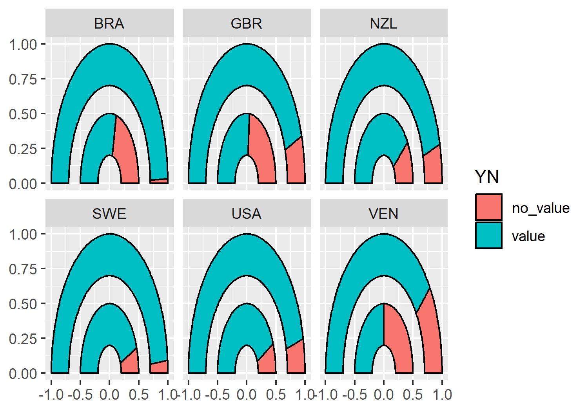
geom_arc_bar() from {ggforce}, facetted by different countries.
12.4 Advanced styling
We now have a double gauge chart - but it could look a lot nicer (and more informative)!
12.4.1 Colors
Let’s start by defining some variables for our colors. Here, we define a highlight_col which we’ll use for the segment showing the percentage who did have immunizations. This should be a bright, eye-catching color as it’s the main point we’re trying to communicate. The second_col will be used to show the percentage who did not have immunizations, so we can choose a color that is a little bit more similar to the background. The background (bg_col) will be a light gray, the second_col will be a medium gray, and the text (text_col) will be black.
highlight_col <- "#990c58"
second_col <- "#949398"
bg_col <- "#dedede"
text_col <- "black"Before we add the new colors to our gauge chart, let’s remove the black outline from around the segments - they’re quite thick lines which don’t add anything to the plot. There will be sufficient contrast between the segments with the new colors we’ve chosen. You can remove the outline from the arc by setting color = NA outside of the aesthetic mapping:
basic_plot <- ggplot(data = gauge_data) +
ggforce::geom_arc_bar(
mapping = aes(
x0 = 0, y0 = 0,
r0 = 0.7, r = 1,
start = ymin_2010, end = ymax_2010,
fill = YN
),
color = NA
) +
ggforce::geom_arc_bar(
mapping = aes(
x0 = 0, y0 = 0,
r0 = 0.2, r = 0.5,
start = ymin_1980, end = ymax_1980,
fill = YN
),
color = NA
) +
facet_wrap(~iso3c, nrow = 2)Now we can apply the colors using scale_fill_manual() from {ggplot2}, setting both the color values but also more informative labels for the legend at the same time.
color_plot <- basic_plot +
scale_fill_manual(
breaks = c("value", "no_value"),
labels = c("Immunized", "Not Immunized"),
values = c(highlight_col, second_col)
)
color_plot
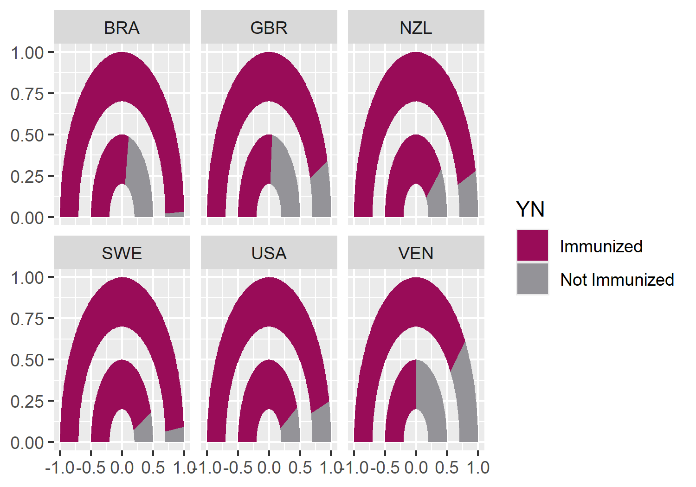
12.4.2 Text and fonts
As we’ve seen in previous chapters, we can load in Google fonts using the {sysfonts} and {showtext} packages. Here, we’ll keep it clean and minimal by using the "Ubuntu" font for both the title and the body font.
sysfonts::font_add_google(name = "Ubuntu", family = "ubuntu")
showtext::showtext_auto()
showtext::showtext_opts(dpi = 300)
body_font <- "ubuntu"Let’s define some text for the title and subtitle. Here, the title is simple (it could perhaps be a little more descriptive or interesting). The subtitle gives a brief explanation of how to interpret the plot, and the main conclusion that we want the reader to take away.
title <- "Measles Immunizations"
subtitle <- "The inner bar represents the percentage of children who received a measles immunization in 1980, whilst the outer bar represents the percentage in 2010. An increase in immunization levels between 1980 and 2010 is seen across all countries."We also create a custom caption with Font Awesome icons, as described in Chapter 6. Remember to update the caption variable to include the source of the data for this visualisation.
social <- social_caption(
icon_color = highlight_col,
font_color = text_col,
bg_color = bg_col,
font_family = body_font
)
caption <- glue::glue(
"**Data**: data.nber.org (10.3386/w15319)<br>**Graphic**: {social}"
)Since the axis labels do not make too much sense for geom_arc_bar() plots, we’ll remove them later when using the theme functions. Instead, we can add our own labels using geom_text() to the end of the gauges. To make it easier, we can construct a small data.frame specifically for adding text labels. This includes the x, and y coordinates where the text should be positioned (you can read these off from the graph we already have since we haven’t yet deleted the axis labels), as well as the label that should appear.
text_df <- data.frame(
x = c(0.35, 0.85),
y = c(-0.1, -0.1),
label = c(1980, 2010)
)We can then add this text to the existing plot by adding a layer with geom_text(), noting that we need to specify the data argument as using the text data.frame we just created. We also need to specify the font family and size directly within the geom_text() function, and can add the title and subtitle text created earlier using the labs() function from {ggplot2}.
text_plot <- color_plot +
geom_text(
data = text_df,
mapping = aes(x = x, y = y, label = label),
family = body_font,
size = 3
) +
labs(
title = title,
subtitle = subtitle,
caption = caption
)
text_plot
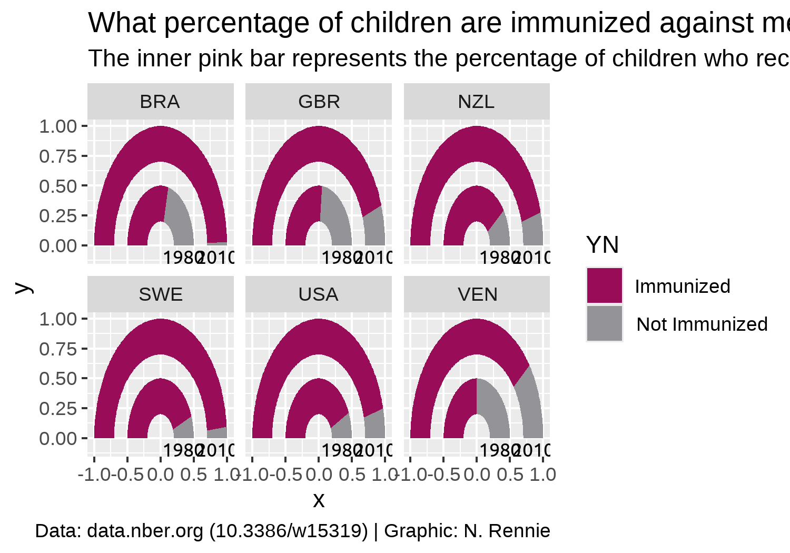
12.4.3 Adjusting themes
We’ll start by removing all of the theme elements such as the grey background, grid lines, and axis labels. The easiest way to do this is using theme_void(). We can use the base_family argument of theme_void() to set the font family that will be used by default for any non-geom text elements that remain.
You may have noticed that the current gauge plots look a bit squashed and not exactly semi-circular. We can fix this by adding coord_fixed() which forces a 1:1 aspect ratio on the plot panel.
theme_plot <- text_plot +
coord_fixed() +
theme_void(base_size = 8.5, base_family = body_font)
theme_plot
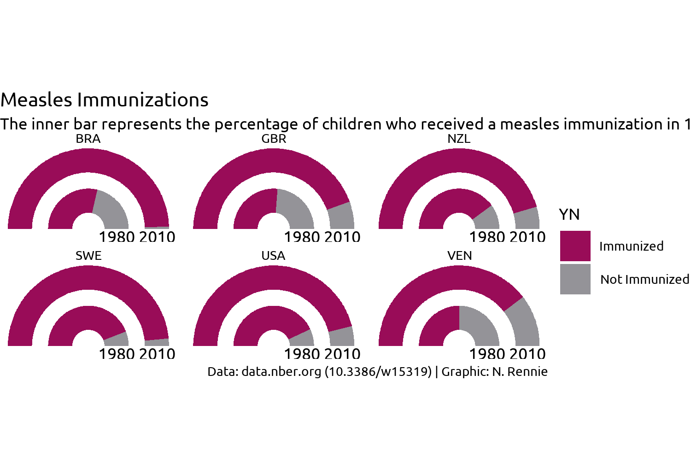
This looks better but it’s still not great. What do we still need to improve with styling?
- The title text doesn’t stand out and blends in to easily with the subtitle, similarly for the facet text. Perhaps a bold font would help?
- The subtitle text doesn’t fit onto the page but we can fix that with the help of the hopefully now familiar
element_textbox_simple()function from {ggtext}. - The caption text also hasn’t rendered correctly since {ggplot2} doesn’t know how to process HTML text on its own without the help of {ggtext}.
- Since we’re using
coord_fixed()to force a specific aspect ratio, there are now some odd spacing issues - there is a large white gap at the top and bottom of the plot, and the year labels are slightly cut off at the bottom. - The legend takes up a lot of space and isn’t very informative.
Let’s fix the first three of these issues by editing the theme() elements:
- We use
element_textbox_simple()for the plot title, subtitle, and caption, and left align all three. - We set
face = "bold"for the title and facetstrip.textand increase the font size using therel()function. - As we’ve done in previous visualisation, we also set the background colors to
bg_coland add some padding around the edges by setting theplot.marginargument.
styled_plot <- theme_plot +
theme(
plot.background = element_rect(
fill = bg_col, color = bg_col
),
panel.background = element_rect(
fill = bg_col, color = bg_col
),
strip.text = element_text(
face = "bold", size = rel(1.2)
),
plot.title = ggtext::element_textbox_simple(
margin = margin(b = 5),
hjust = 0,
halign = 0,
face = "bold",
size = rel(1.5)
),
plot.subtitle = ggtext::element_textbox_simple(
margin = margin(b = 10),
hjust = 0,
halign = 0
),
plot.caption = ggtext::element_textbox_simple(
margin = margin(t = 10),
hjust = 0,
halign = 0
),
plot.margin = margin(5, 5, 5, 5)
)
styled_plot
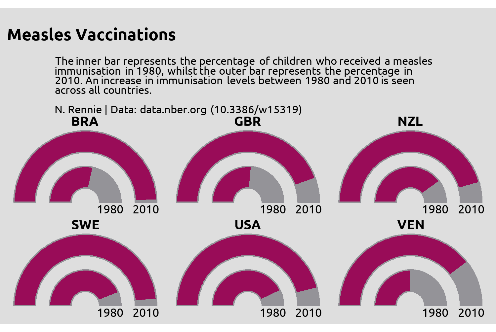
We’re almost there, but the year label text remains slightly squashed. Part of the problem is how much space the legend takes up - it’s leaving too much empty space in the top and bottom right corners, whilst taking away space from other places where we need more of it.
12.4.4 Designing a better legend
We have a few different options for dealing with the legend. Some options for a better legend:
- Leave the legend as it is but reposition it to above or below the main chart, rather than to the right, and put it into a single row. Then it would take up less space. We would also need to add a better title (or remove the title completely).
- We could design a custom legend, similar to the one created in Chapter 11. This might be a good option as double gauge charts are less common and readers might be less familiar with them. Adding additional information about how they work might prove helpful.
- We could instead use colored text in the subtitle to indicate what the categories are, as we did in Chapter 5 and Chapter 6. For this visualisation, highlighting the Immunized would be enough as there are only two categories.
What might a custom legend look like? A custom legend could be a subset of the full plot with some additional annotations. For example, we could subset the data to only include one country ("USA" in this case) and recreate the plot we already have. Here, we also remove the built-in legend and add a How do I read this plot? title.
legend_plot <- ggplot(
data = dplyr::filter(gauge_data, iso3c == "USA")
) +
ggforce::geom_arc_bar(
mapping = aes(
x0 = 0, y0 = 0, r0 = 0.7, r = 1,
start = ymin_2010, end = ymax_2010, fill = YN
),
color = NA
) +
ggforce::geom_arc_bar(
mapping = aes(
x0 = 0, y0 = 0, r0 = 0.2, r = 0.5,
start = ymin_1980, end = ymax_1980, fill = YN
),
color = NA
) +
geom_text(
data = text_df,
mapping = aes(x = x, y = y, label = label),
family = body_font, size = 3
) +
coord_fixed() +
scale_fill_manual(
breaks = c("value", "no_value"),
labels = c("Immunized", "Not Immunized"),
values = c("#990c58", "#949398")
) +
labs(title = "How do I read this plot?") +
facet_wrap(~iso3c, nrow = 2) +
theme_void() +
theme(
legend.position = "bottom",
plot.background = element_rect(
fill = bg_col, color = bg_col
),
panel.background = element_rect(
fill = bg_col, color = bg_col
),
strip.text = element_text(
face = "bold", size = rel(1.2)
),
plot.title = ggtext::element_textbox_simple(
margin = margin(b = 5),
hjust = 0.5,
halign = 0.5,
face = "bold",
size = rel(1.5)
),
legend.title = element_blank(),
plot.margin = margin(5, 5, 5, 5)
)We might also add some annotations: first define a data.frame containing the positions and labels for the text, then add it to the plot using geom_text(). Note that we also set clip = "off" inside coord_fixed() to prevent the text getting cut off if it lies outside the range of the plot, and adjust the limits of the x and y axes.
# Define the text and positions
legend_text <- data.frame(
x = c(1.2, -1.1, -0.7),
y = c(0.4, 0.75, 0.95),
label = c(
"% not immunized in 2010",
"% immunized in 2010",
"ISO3 country code"
)
)
# Add to the legend plot
legend_with_text <- legend_plot +
geom_text(
data = legend_text,
mapping = aes(
x = x, y = y,
label = stringr::str_wrap(label, 10)
),
family = body_font, size = 3
) +
scale_x_continuous(limits = c(-1.3, 1.3)) +
coord_fixed(clip = "off")And we could add some arrows using geom_segment() to direct the text:
legend_with_text +
annotate("segment",
x = -0.5, xend = -0.2, y = 0.99, yend = 1.05,
arrow = arrow(length = unit(2, "mm"), type = "closed")
) +
annotate("segment",
x = 1.2, xend = 1.0, y = 0.25, yend = 0.15,
arrow = arrow(length = unit(2, "mm"), type = "closed")
) +
annotate("segment",
x = -1.1, xend = -0.95, y = 0.55, yend = 0.4,
arrow = arrow(length = unit(2, "mm"), type = "closed")
)
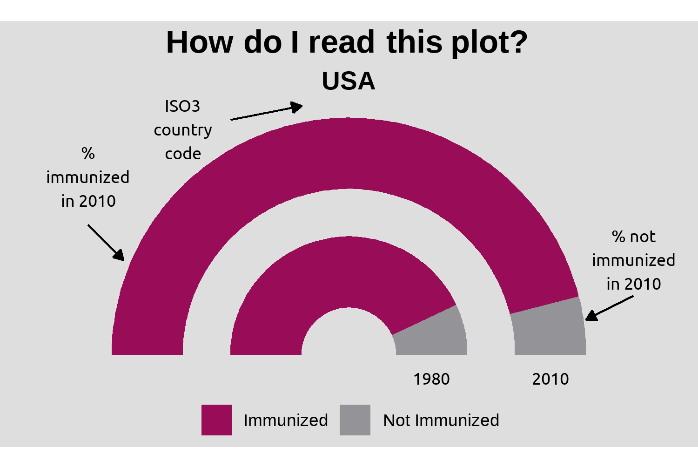
As with previous examples, don’t be fooled into thinking that the positioning and sizing of the text and arrows is something that happened perfectly the first time. The values are often picked through a series of trial and error, and with practice you’ll get better at choosing starting values.
We could add this legend to the main plot, perhaps in the top right corner using {patchwork} (Pedersen 2024) as we did in Chapter 11. However, let’s stop and think for a second. How much value does this custom legend add? Do we really need to use so much space to identify the two categories on the chart? The years are already labelled, and it’s reasonably obvious that the three letters at the top represent a country. Maybe we don’t need a full custom legend. Would some colored text in the subtitle not be just as effective?
Here, we use the glue() function from the {glue} package (Hester and Bryan 2024), along with some HTML code to color part of the subtitle text using the highlight_col. We also remove the original legend by setting legend.position = "none".
# Define a better subtitle
subtitle <- glue::glue(
"The inner bar represents the <span style='color: {highlight_col};'>percentage of children who received a measles immunization</span> in 1980, whilst the outer bar represents the percentage in 2010. An increase in immunization levels between 1980 and 2010 is seen across all countries."
)
# Add the new subtitle and remove the legend
styled_plot +
labs(subtitle = subtitle) +
theme(legend.position = "none")
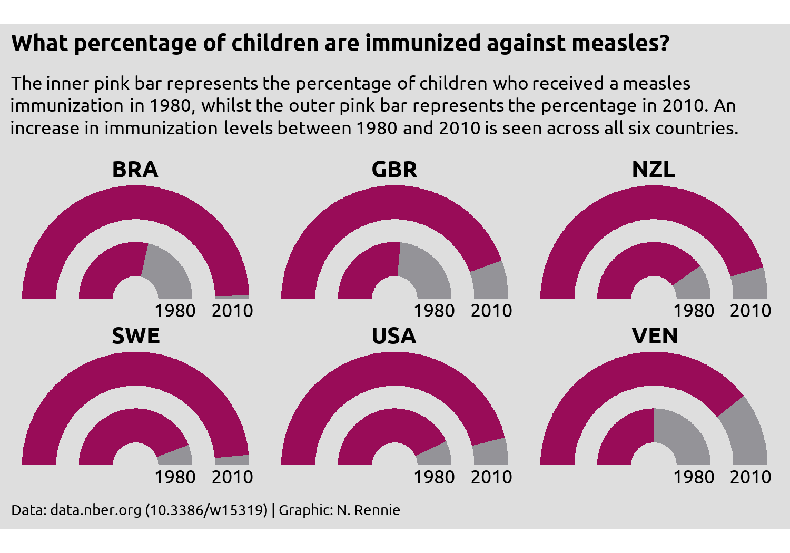
This gives almost as much information as the custom legend idea, without taking up nearly as much space or providing as much of a distraction.
12.5 Reflection
Are gauge charts the most effective method of visualising this data? No. Gauge charts have their own problems, some of which you can see here. Since the ring representing 2010 is on the outside, the radius is larger, and therefore the area is as well. If you measure the change on arc length between 1980 and 2010, you’ll get different answers to if you measured the proportional change in area for the two. Assuming we stick with the gauge chart idea, what further changes could be made to this plot to improve it?
There’s no reason to use country codes instead of country names in this situation, other than perhaps laziness. There is space available for the full names. Though many people could likely work out which countries are shown here by their country codes, there’s no need to make readers figure it out on their own. Providing the country names explicitly gives a reader less work to do, meaning they can focus on what you’re actually trying to show.
Similarly, providing the exact percentages as labelled text would make it easier to see what the change in immunization coverage is. It’s pretty clear that there has been an increase across all six countries, but the nature of gauge charts (no grid lines) makes it quite difficult to get the exact values. What’s the difference between Brazil and Sweden in 2010? It’s too difficult to tell here.
{kind=link}
{kind=link}
{kind=link}
{kind=link}
{kind=link}
{kind=link}
{kind=link}
{kind=link}